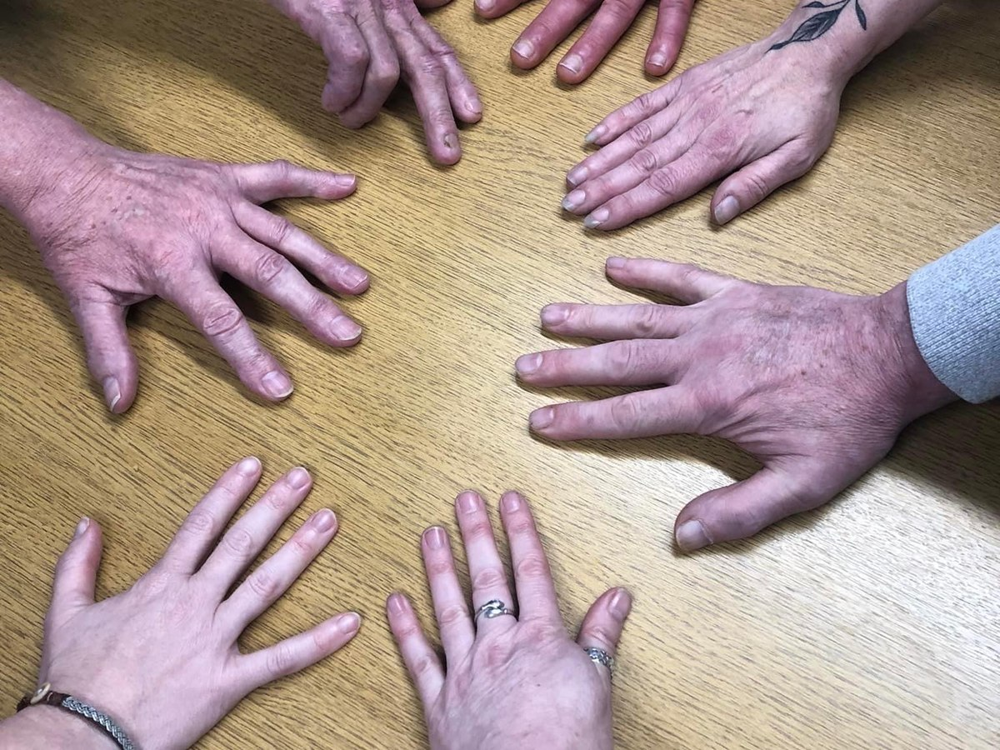

News · 2023
A podcast series on peer support, from the rooms this study was built in

The University of Aberdeen launched Recovery Stories: peer support for connection and compassion enabling recovery from alcohol and drugs, a four-part series hosted by Lucia D’Ambruoso at the Aberdeen Centre for Health Data Science.
The series matters to this study because of where the research took place. Community partners were recruited through Turning Point Scotland, and the workshops ran in recovery spaces — peer support groups for alcohol, drugs and addiction. Those rooms were the condition that made the method possible: people already had practice at being honest with each other, and trust did not have to be built from nothing.
Peer support is the process of giving and receiving non-professional, non-clinical assistance from people with similar conditions or circumstances. Across four episodes, practitioners and peer support workers describe using their own experience to support recovery through connection and compassion.
It is also what community partners marked as missing when they mapped who was available to help them stop smoking. Peer support for addiction existed. Peer support for smoking did not.
All news